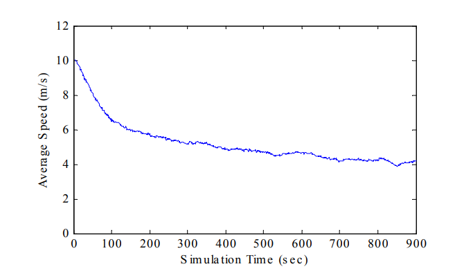
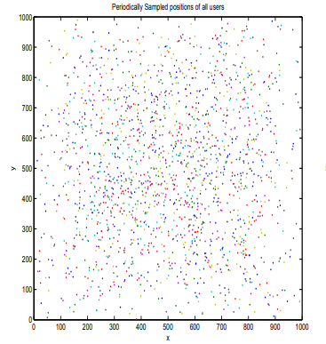
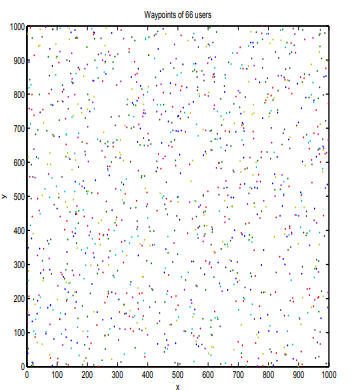

§ MobMod: Palm Calculus
§ Issue with Random Models
To do this, we have to first realize that the performance measures of ad-hoc mobility models are directly impacted by the selection of the mobility model. So, to have any talk about the issues, we need to be clear about the model we are talking about first. Let us select the Random Waypoint Model. Now, one of the most important parameters of most mobility models is the speed, either of the individual particles as a constant value, or a distribution of speeds. Thus, if we have to compare the performance of routing protocols using the RWP model, then we have to be able to adjust this parameter in order to compare the performance of routing protocols under different levels of nodal speed. To be able to make this comparison, we need to assume that the model will reach a steady-state of speeds that can be used to compare average metrics, and in the RWP this average is often believed to be either half of the maximum speed
Vmaxsince the node speeds are chosen from a uniform distribution
(0,Vmax], or some other justified value in this range. Thus, to analyze the performance of a protocol and make comparisons, we assume that this average is reached at the start of the simulation. Hence, we would find simulations making comparisons by varying the value of
Vmax, and packaging results into averaged comparisons.
§ Decay in Random Waypoint
To understand the problem, let us take the average instantaneous speed which we define as
vˉ(t)=N∑i=1Nvi(t)
Where,
N is the total number of nodes in the simulation, and
vi(t) is the speed of a node at time
t. For
Vmax=20 and null pause times, an average of the instantaneous average speeds over 30 scenarios is shown in the following graph

We see that this instantaneous average is consistently decreasing and it was proven that this can mathematically decay to 0 in the RWP model. An intuitive explanation is that the random waypoint model chooses a destination and a speed for a node at random and independently, and the node will keep moving at that speed until it reaches the destination. So, if we have a node with slow speed and a far-away destination, it is quite possible that this node might move so slow that it may take a very long time to finish the trip, or worse, never reach the destination. More and more nodes can be stuck with these slow speeds and thus, dominate the average value over time and this is what leads to the decay. This is a recurring issue with the majority of such model comparisons.
§ Resolving through Palm Calculus
To understand Palm Calculus, we have to understand the difference between time and event averages. Time averages are obtained by sampling the system at arbitrary time instants, for example, the figure below is obtained by sampling the system every 10 sec of simulated time.

Event averages are obtained by sampling the system when selected state transitions occur. For example, the figure of the same system as time averages, when sampled on the times at which the nodes reach end of Waypoints is shown below:

Palm calculus is a set of formulas that relate time averages versus event averages. Thus, the distribution obtained through event sampling is called a Palm distribution.
§ Stationary Processes
A stationary process is one that is independent of a shift that can be applied to it. SO, for the joint distribution of stochastic variable
St from
t=t1,..,tn, if we apply a shift of
u, the new joint distribution
(St1+u,St2+u,...,Stn+u) should be independent of the shift u.
- Thus, the process does not change statistically as it gets older i.e it is Stationary. Palm calculus applied to any stationary process.
Now, If
Xt is jointly stationary with the simulation, the distribution of
Xt is, by definition, independent
of
t and this is called the time stationary distribution of
X. If
Xt is ergodic i.e we can deduce its properties through taking a sufficiently long sample of the process, then we can assert that for a discrete set of times
t, the expectation of
Xt being bounded by a function
ϕ can be estimated by the time units for which the value of
ϕ is valid, if these are of a sufficiently large number
E(ϕ(Xt))=T1t=1∑Tϕ(Xt)
In other words, the probability of
Xt being in a set of state
W is proportional to the fraction of time
Xt spends in the states of
W. In other words, the time stationary distribution of
Xt can be estimated by a time average.
§ Building up to Palm Formulas
Now, if we condition the expectation and probability on a point process, like reaching a waypoint, we can get palm intensity and probability. In general, a random sequence of time instants
Tn can be defined as the times at which the simulation
St reaches a certain subset of the state-space or does a transition from some state
s to some state
s′, where both of these states belong to the same set (Like the set of waypoints). NOw, if we assume that the time at which we are observing our simulation is 0, then we can say that
T0≤0<T1
Thus,
T0 is the last time a transition occurred before time 0, and
T1 the next transition
time starting from time 0. Now, we can define an intensity over this point process to be the probability of a transition to happen at a time point
λ=P(T0=0)
In continuous-time, this would be the same as saying that the expectation over the number
N of transition in time-interval
[t,t+τ] satisfied the above equation i.e
E(N(t,t+τ))=λτ
Thus, for our example of time points at which transitions occur, we could say that for a stationary process, the conditional expectation at time
t is independent of
t and is the same as the expectation at
t=0, and so
E0(Xt)=E(X0∣Transition)
This is called the palm expectation, and if our process is ergodic, we can apply the sam criteria to our palm distribution and say
E0(X0)=N1n=1∑NXTn
Thus, if
Xt is the speed and the transitions are departures from a waypoint, we are essentially saying
P0(Xt∈W)∼P0(X0∈W)
and both of these probabilities are proportional to the fraction of transitions in which the speed of the node is in the set
W.
§ Major Palm Formulas
Inversion Formula : Gives the relation between the time-stationary expectations and palm expectations
E(Xt)=E(X0)=λE0(s=1∑T1Xs)=λE0(s=0∑T1−1Xs)E(Xt)=E(X0)=λE0(∫0T1Xsds)
Intensity Formula: The average number of selected transitions per time unit
λ satisfies
λ1=E0(T1−T0)=E0(T1)
§ Feller's Paradox
Assume at a bus stop there pass in average
λ buses per hour. If an inspector is measuring the time between the buses, then they would measure an estimate of
E0(T1−T0)=λ1
Now, if someone arrives at time
t and measures the event as the difference between the time until the next bus and the time since the last bus, they would estimate
E(X0)=E(T1−T0) and the above two quantities can be related as:
⟹⟹⟹∴E(T1−T0)=λE0(∫0T1Xtdt)E(T1−T0)=λE0(∫0T1(+t−(−t))dt)E(T1−T0)=λE0(T2)E(T1−T0)=λ1+λvar0(T1−T0)E(T1−T0)=E0(T1−T0)+λvar0(T1−T0)
This means that the estimate of the time that the person would have is
λvar0(T1−T0) bigger than the inspector's estimate, even though both of them sample the same system. This is called the Feller's paradox. Intuitively, this occurs because a stationary observer (Joe) is more likely to fall in a large interval. Thus, Palm calculus gives us a way to relate distributions that have been sampled differently. So, in the case of RWP, this means that Palm calculus allows us to reconcile the issues we saw with the RWP models where we see decay in speed when sampled over the averages of particles in transitions, and the average speed when sampled over the averages
§ Back to RWP
The
λ1 value that we get from the intensity formula can be related to the palm distribution of hte speed as follows:
λ1=E0(D1)E0(V01)=Δˉ∫0∞v1fV0(v)dv
Here,
Δˉ is the average distance between 2 points in teh Area selected and
fV0 is the density function that represents the palm distribution of the speed. When we apply Palm distributions to RWP, we get:
- Selecting Speeds: the time stationary distribution of the speed has a density proportional to v1fV0(v) . thus if we want our process to have a time distribution that is stationary, we need to choose this function very carefully. Some examples are: fV0(v)=Cv1vmin<v<vmax, fV0(v)=Cvmax−vminv−vmin, and fV0(v)=C(vmin+v(vmax−vmin)). The key is to get a function that when divided by v would give a function that more-or-less is stable
- Selecting Mobile Positions: Just like Feller's paradox, we do not have a closed-form solution for different mobile positions. Thus, we can't generate the directly from the distributions as in the case of velocity. However, we can apply heuristics to get around it. One heuristic is Choosing endpoints such that joint probability density proportional to the distance between them. So, if Prev(t) is the previous waypoint before or at time t, and Next(t) is the next waypoint after time t, then for the triplet (Prev(t),M(t),Next(t)) we need have the following conditions met: (1) (Prev(t),Next(t)) has a joint density over A×A given by fPrev(t),Next(t)(p,n)=K∣∣p−n∣∣, and (2) The distribution M(t) which we get from Prev(t)=p,Next(t)=n should be uniform in the segment [p,n]
If we choose the initial speed and locations in to satisfy these conditions, then we can ensure a stationary distribution in time and palm spaces for RWP and eliminate the ergodic degreaing problem. This, would allow us to effectively compare the processes in different settings and thus, make the RWP model more useful.